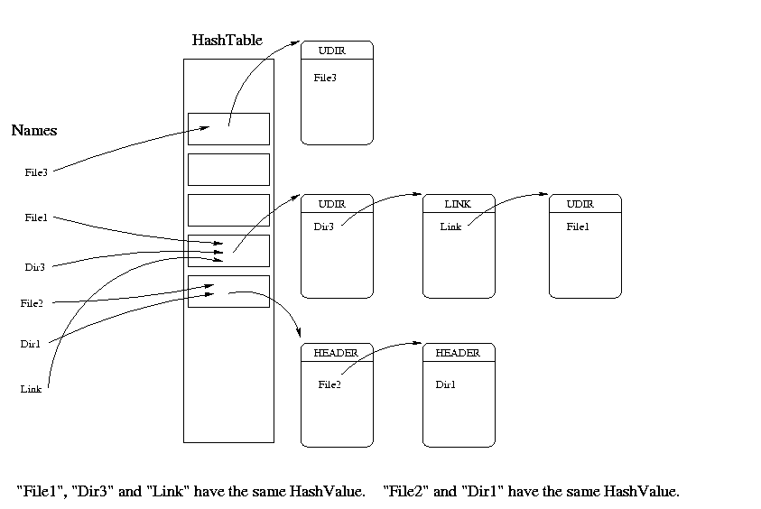
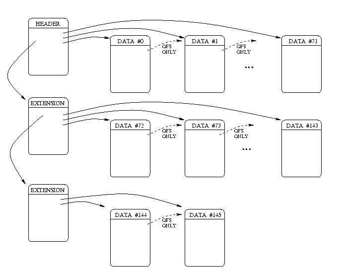

With physical layer, I'm talking about the way bytes are physically stored
on a magnetic surface, with the RLL or MFM encoding.
The next layer, according to the 'most physical' to 'most conceptual' order,
is the partitions layer : this is how the AmigaDOS is managing media with more then
one partition, like Zip disks or hard disks.
The next and last layer is the volume layer : where the files
and directories are stored.
The physical layer is described in the 2nd chapter,
The volume layer is the biggest part of the document (4th and 5th chapters),
since it's the most interesting,
The partitions layer is explained in the 6th chapter.
Let's continue with more conventional things in an introduction.
This document is Copyright (C) 1997-1999 by Laurent Clévy, but may be freely distributed, provided the author name and addresses are included and no money is charged for this document.
This document is provided "as is". No warranties are made as to its correctness.
Amiga and AmigaDOS are registered Trademarks of Gateway 2000.
Macintosh is a registered Trademark of Apple.
If you find any mistakes in this document, have any comments about its content,
feel free to send me an e-mail.
Corrections are very welcome.
You can find new versions of this document at :
In this document, hexadecimal values use the C syntax : for example 0x0c is the decimal value 12.
Since the Amiga is a 680x0 based computer, integers that require more than
one byte are stored on disk in 'Motorola order' : the most significant byte
comes first, then the less significant bytes in descending order of
significance (MSB LSB for two-byte integers, B3 B2 B1 B0 for four-byte
integers). This is usually called big endian byte ordering.
The Intel based PCs are using the little endian byte ordering.
A 'word' or 'short' is a 2-byte (16 bits) integer, a 'long' a 4-byte (32 bits) integer. Values are unsigned unless otherwise noted.
A 'block' in this document will be 512 consecutive bytes on disk,
unless noted otherwise, the variable 'BSIZE' will denote the blocksize.
The word 'sector' and
'block' will be used as synonyms here, even if 'sector' is usually related to the
physical side, and the 'block' to the logical side. This is because the AmigaDOS
can only handle one sector per block. Some other Unix filesystems can have more
then one sector per block.
A block pointer is the number of this block on the disk. The first one is
the #0 block.
There are 'logical' and 'physical' block pointers. 'Logical' ones are related
to the start of one volume, 'physical' one are related to the start
of a physical media. If a volume starts at the #0 physical sector, a physical
pointer and a logical pointer is the same thing, like with floppies.
A simple definition of 'Hashing' could be : "a method to access tables : given a number or a string, a hash function returns an index into an array". This definition is correct for this document, but there is a lot of other hashing methods, that might be far more complex.
Linked lists are cell-oriented data structures. Each cell contains a pointer to the next or previous cell or both, the last cell pointer is null.
C example :
struct lcell {
char name[10];
/* contains next cell adress, or NULL if this cell is the last */
struct lcell *next_cell;
};
Block names begin with a capital (Rootblock). Field names are noted between quotes ('field_name').
All formats are described as tables, one row per field. Here is an example with the beginning of the well known GIF format :
offset type length name comments ---------------------------------------------------------- 0 char 3 signature 'GIF' 3 char 3 version '87a' or '89a' 6 short 1 screen width (little endian) 8 short 1 screen height (little endian)
The .ADF format is the format created and used by the -incredible- UNIX Amiga Emulator (UAE), written by Berndt Schmitt. The home page is here : http://www.freiburg.linux.de/~uae/
The .ADF files can be created with the program transdisk.
The following part deals with the way the Amiga disk controller accesses the magnetic medium. If you only want to understand the .ADF format, you don't need to read this part.
Information is written on disk with magnetic fields. Magnetic fields can be made 'on' or 'off'. But the read/write heads are not capable of detecting directly if a field is on or off. An encoding is used to store memory bits on the medium. The CHANGE of fields polarisation will indicate if the bit is 1 or 0. For Amiga floppy disks (and PC floppies), the encoding scheme is MFM (Modified frequency modulation).
The Amiga floppy disk controller (FDC) which is called 'Paula' is very flexible. It is capable of reading/writting Amiga/PC/Macintosh/AppleII/C64 3.5 inches and 5.25 inches floppy disks.
Paula can read a variable number of bytes from disk, the PC FDC can't.
The PC FDC uses the index hole to find the beginning of a track,
Paula uses a synchronization word.
The Macintosh uses GCR encoding instead of MFM.
In fact, Paula is simpler than the PC FDC because it does not perform
automatically the decoding just after the read operation, and the encoding just
before the write operation : it must be done by software. The MFM decoding/encoding
is done by hardware with the PC FDC, the Amiga can do GCR or MFM decoding/encoding
because it's done with the CPU. In some versions of the AmigaDOS,
the decoding/encoding is made by the Blitter custom chip.
Classic PC FDCs can't read Amiga floppy disks even if they are MFM encoded on a 3.5 inch floppy, because they can not find the beginning of a track. This is why the .ADF format has been created.
However, a custom FDC available on PC machines is capable of reading/writing Amiga, PC, Macintosh, Atari and C64 floppies !!! This is CatWeasel : link
Paula parametrization for Amiga disks :
Paula is able to put the read/write heads on a cylinder, and is able to read with the lower or upper side head. A track of 0x1900 words is usually read.
The MFM decoding is made by the Amiga CPU, not by Paula. This allows custom encoding, to protect floppies against copying for example.
Here follows the MFM encoding scheme :
user's data bit MFM coded bits
--------------- --------------
1 01
0 10 if following a 0 data bit
0 00 if following a 1 data bit
User data long words are split in two parts, a part with odd bits part first,
followed by a part with even bits. Once encoded, the amount of data stored
doubles.
The MFM decoding will transform magnetic fields into computer usuable bits.
The encoding process will take one long (user's data), and produces
two longs (MFM coded longs): one for the odd bits of the user long,
a second for the even bits of the user long.
Vice versa, the decoding process will take the half of two MFM longs to produce
one user's long.
Paula will search two synchronization words, and then read 0x1900 words
of data. We will call those 0x1900 words a 'MFM track'.
There are 80 cylinders on a Amiga floppy disk. Each cylinder has 2 MFM tracks,
1 on each side of the disk.
Double density (DD) disks have 11 sectors per MFM track, High density (HD) disks have 22 sectors.
So a MFM track consists of 11/22 MFM encoded sectors, plus inter-track-gap.
Note that sectors are not written from #0 to #10/21, you must use the 'info'
field to restore the correct order when you read the tracks. Each MFM track begins with
the first sector, and ends with the end of the last sector.
Each sector starts with 2 synchronization words.
The synchronization value is 0x4489.
The encoded parts are 'header' and 'data'.
Here it comes :
00/0x00 word 2 MFM value 0xAAAA AAAA (when decoded : two bytes of 00 data)
SYNCHRONIZATION
04/0x04 word 1 MFM value 0x4489 (encoded version of the 0xA1 byte)
06/0x06 word 1 MFM value 0x4489
HEADER
08/0x08 long 1 info (odd bits)
12/0x0c long 1 info (even bits)
decoded long is : 0xFF TT SS SG
0xFF = Amiga v1.0 format
TT = track number ( 3 means cylinder 1, head 1)
SS = sector number ( 0 upto 10/21 )
sectors are not ordered !!!
SG = sectors until end of writing (including
current one)
Example for cylinder 0, head 1 of a DD disk :
0xff010009
0xff010108
0xff010207
0xff010306
0xff010405
0xff010504
0xff010603
0xff010702
0xff010801
0xff01090b
0xff010a0a
the order of the track written was sector 9, sector 10,
sector 0, sector 1 ...
(see also the note below from RKRM)
Sector Label Area : OS recovery info, reserved for future use
16/0x10 long 4 sector label (odd)
32/0x20 long 4 sector label (even)
decoded value is always 0
This is operating system dependent data and relates to how AmigaDOS
assigns sectors to files.
Only available to 'trackdisk.device', but not with any other floppy
or hard disk device.
END OF HEADER
48/0x30 long 1 header checksum (odd)
52/0x34 long 1 header checksum (even)
(computed on mfm longs,
longs between offsets 8 and 44
== 2*(1+4) longs)
56/0x38 long 1 data checksum (odd)
60/0x3c long 1 data checksum (even)
(from 64 to 1088 == 2*512 bytes)
DATA
64/0x40 byte 512 coded data (odd)
576/0x240 byte 512 coded data (even)
1088/0x440
END OF DATA
Note from RKRM :
The track number and sector number are constant for each particular
sector. However, the sector offset byte changes each time we rewrite
the track.
The Amiga does a full track read starting at a random position on the
track and going for slightly more than a full track read to assure
that all data gets into the buffer. The data buffer is examined to
determine where the first sector of data begins as compared to the
start of the buffer. The track data is block moved to the beginning
of the buffer so as to align some sector with the first location in
the buffer.
Because we start reading at a random spot, the read data may be
divided into three chunks: a series of sectors, the track gap, and
another series of sectors. The sector offset value tells the disk
software how many more sectors remain before the gap. From this the
software can figure out the buffer memory location of the last byte
of legal data in the buffer. It can then search past the gap for the
next sync byte and, having found it, can block move the rest of the
disk data so that all 11 sectors of data are contiguous.
Example:
The first-ever write of the track from a buffer looks
like this:
|sector0|sector1|sector2|......|sector10|
sector offset values:
11 10 9 ..... 1
(If I find this one at the start of my read buffer, then I
know there are this many more sectors with no intervening
gaps before I hit a gap). Here is a sample read of this
track:
|sector9|sector10||sector0|...|sector8|
value of 'sectors till end of write':
2 1 .... 11 ... 3
result of track re-aligning:
|sector9|sector10|sector0|...|sector8|
new sectors till end of write:
11 10 9 ... 1
so that when the track is rewritten, the sector offsets
are adjusted to match the way the data was written.
C algorithm :
#define MASK 0x55555555 /* 01010101 ... 01010101 */
unsigned long *input; /* MFM coded data buffer (size == 2*data_size) */
unsigned long *output; /* decoded data buffer (size == data_size) */
unsigned long odd_bits, even_bits;
unsigned long chksum;
int data_size; /* size in long, 1 for header's info, 4 for header's sector label */
int count;
chksum=0L;
/* the decoding is made here long by long : with data_size/4 iterations */
for (count=0; count<data_size/4; count++) {
odd_bits = *input; /* longs with odd bits */
even_bits = *(input+data_size); /* longs with even bits : located 'data_size' bytes farther */
chksum^=odd_bits; /* eor */
chksum^=even_bits;
/*
* MFM decoding, explained on one byte here (o and e will produce t) :
* the MFM bytes 'abcdefgh' == o and 'ijklmnop' == e will become
* e & 0x55U = '0j0l0n0p'
* ( o & 0x55U) << 1 = 'b0d0f0h0'
* '0j0l0n0p' | 'b0d0f0h0' = 'bjdlfnhp' == t
*/
/* on one long here : */
*output = ( even_bits & MASK ) | ( ( odd_bits & MASK ) << 1 );
input++; /* next 'odd' long and 'even bits' long */
output++; /* next location of the future decoded long */
}
chksum&=MASK; /* must be 0 after decoding */
For example, to decode the DATA field of a MFM sector :bytes/sector sector/track track/cyl cyl/disk ------------------------------------------------------------------------ DD disks 512 11 2 80 HD disks 512 22 2 80The relations between sectors, sides and cylinders are for a DD disk :
Block sector side cylinder -------------------------------- 0 0 0 0 1 1 0 0 2 2 0 0 ... 10 10 0 0 11 0 1 0 ... 21 10 1 0 22 0 0 1 .. 1759 10 1 79Order = increasing sectors, then increasing sides, then increasing cylinders.
A DD disk has 11*2*80=1760 (0 to 1759) blocks, a HD disk has 22*2*80=3520 blocks.
The length of .ADF files for a DD disk is therefore 512*11*2*80 = 901120 bytes.
Those 'raw' blocks, 512 consecutive bytes, store different 'logical' blocks to manage files and directories.
The classic Amiga filesystem has a internal command with one 32 bits wide
offset parameter (unsigned). It tells where to start the read/write operation.
The biggest size for an Amiga disk is therefore 2^32 = 4 GB.
Anyway, there exists a 3rd party patch which changes the 32 bits limit
to 64 bits (on Aminet, disk/misc/ffstd64.lha).
Jorg Strohmayer added :
TD64 is an unofficial 3rd party hack. Official solution is NSD (new style device), updates for the
internal devices and the filesystem are available from
http://www.amiga.de.
There is a patch for old (and TD64) devices too (NSDPatch).
A volume is a floppy disk or a hard disk partition.
The first file system for the Amiga was embedded in the version 1.2 of AmigaDOS.
With version 2.xx of AmigaDOS the Fast File System (FFS) was introduced, an improved version of
the 1.2, also called old file system (OFS).
The version 3.0 of AmigaDOS added an international characters mode (INTL)
and a directory cache mode (DIRC).
Links are only supported under FFS.
The start of a floppy volume contains space for sectors which may contain boot code.
The middle of the volume contains information about
the root (upper most) directory contents and information about free and used blocks.
Other blocks are of course used to store files and directories.
The file length, the directory tree depth, the number of entries per directory are only limited by disk size. (Actually the maximum filesize is limited to 4 Gbyte sizeof(ulong) which should normally be more than sufficient).
Let's introduce the logical structures used by the Amiga file system in a table (for floppies) :
Object Related logical blocks ------------+---------------------------------------------------------------- Volume Rootblock, Bitmap block File File Header block, Extension block, Data block, Link block Directory Rootblock, Directory block, Directory Cache block, Link blockThe main data types are a trees and linked lists.
* BootBlock
-------------------------------------------------------------------------------
offset size number name meaning
-------------------------------------------------------------------------------
0/0x00 char 4 DiskType 'D''O''S' + flags
flags = 3 least signifiant bits
set clr
0 FFS OFS
1 INTL ONLY NO_INTL ONLY
2 DIRC&INTL NO_DIRC&INTL
4/0x04 ulong 1 Chksum special block checksum
8/0x08 ulong 1 Rootblock Value is 880 for DD and HD
(yes, the 880 value is strange for HD)
12/0x0c char * Bootblock code (see 5.2 'Bootable disk' for more info)
The size for a floppy disk is 1012,
for a harddisk it is
(DosEnvVec->Bootblocks * BSIZE) - 12
-------------------------------------------------------------------------------
The DiskType flag informs of the disk format.
There are few differences between the two file systems :
If the checksum and the DiskType are correct, the system will execute the bootblock code, at boot time, of course :-).
The Bootblock code is optional, see 5.2 section.
The Bootblock checksum algorithm follows :
* in 68000 assembler :
lea bootbuffer,a0
move.l a0,a1
clr.l 4(a1) ;clear the checksum
move.w #(BOOTBLOCKSIZE/4)-1,d1 ;for floppy disks = 1024
;for hd = (DosEnvVec->Bootblocks * BSIZE)
moveq #0,d0
lpchk: add.l (a0)+,d0 ;accumulation
bcc.s jump ;if carry set, add 1 to checksum
add.l #1,d0
jump: dbf d1,lpchk ;next long word
not.l d0
move.l d0,4(a1) ;new checksum
* in C (version 1):
#include<limits.h>
#define Short(p) ((p)[0]<<8 | (p)[1])
#define Long(p) (Short(p)<<16 | Short(p+2))
unsigned long newsum,d;
unsigned char buf[BOOTBLOCKSIZE]; /* contains bootblock */
/* for floppy disks = 1024, */
/* for hard disks = (DosEnvVec->Bootblocks * BSIZE) */
int i;
memset(buf+4,0,4); /* clear old checksum */
newsum=0L;
for(i=0; i<BOOTBLOCKSIZE/4; i++) {
d=Long(buf+i*4);
if ( (ULONG_MAX-newsum) < d ) /* overflow */
newsum++;
newsum+=d;
}
newsum=~newsum; /* not */
* version 2 (From Ralph Babel's 'Install2.c', sent by Hans-Joachim)
unsigned long checksum, precsum;
checksum = 0;
for(i=0; i<BOOTBLOCKSIZE/sizeof(unsigned long); i++) {
precsum = checksum;
if ( (checksum+=Long(buf+i*4)) < precsum) /* better 68000 to C translation of 'bcc' */
++checksum;
}
checksum = ~checksum;
The Rootblock is located at the physical middle of the media : block number 880 for DD disks, block 1760 for HDs. The exact calculation where it is stored is as follows:
numCyls = highCyl - lowCyl + 1
highKey = numCyls * numSurfaces * numBlocksPerTrack - 1
rootKey = INT (numReserved + highKey) / 2
The Rootblock contains information about the disk : its name, its formatting date, etc ...
It also contains information to access the files/directories/links located at the uppermost (root) directory.
* Root block (BSIZE bytes) sector 880 for a DD disk, 1760 for a HD disk
------------------------------------------------------------------------------------------------
0/ 0x00 ulong 1 type block primary type = T_HEADER (value 2)
4/ 0x04 ulong 1 header_key unused in rootblock (value 0)
ulong 1 high_seq unused (value 0)
12/ 0x0c ulong 1 ht_size Hash table size in long (= BSIZE/4 - 56)
For floppy disk value 0x48
16/ 0x10 ulong 1 first_data unused (value 0)
20/ 0x14 ulong 1 chksum Rootblock checksum
24/ 0x18 ulong * ht[] hash table (entry block number)
* = (BSIZE/4) - 56
for floppy disk: size= 72 longwords
BSIZE-200/-0xc8 ulong 1 bm_flag bitmap flag, -1 means VALID
BSIZE-196/-0xc4 ulong 25 bm_pages[] bitmap blocks pointers (first one at bm_pages[0])
BSIZE- 96/-0x60 ulong 1 bm_ext first bitmap extension block
(Hard disks only)
BSIZE- 92/-0x5c ulong 1 r_days last root alteration date : days since 1 jan 78
BSIZE- 88/-0x58 ulong 1 r_mins minutes past midnight
BSIZE- 84/-0x54 ulong 1 r_ticks ticks (1/50 sec) past last minute
BSIZE- 80/-0x50 char 1 name_len volume name length
BSIZE- 79/-0x4f char 30 diskname[] volume name
BSIZE- 49/-0x31 char 1 UNUSED set to 0
BSIZE- 48/-0x30 ulong 2 UNUSED set to 0
BSIZE- 40/-0x28 ulong 1 v_days last disk alteration date : days since 1 jan 78
BSIZE- 36/-0x24 ulong 1 v_mins minutes past midnight
BSIZE- 32/-0x20 ulong 1 v_ticks ticks (1/50 sec) past last minute
BSIZE- 28/-0x1c ulong 1 c_days filesystem creation date
BSIZE- 24/-0x18 ulong 1 c_mins
BSIZE- 20/-0x14 ulong 1 c_ticks
ulong 1 next_hash unused (value = 0)
ulong 1 parent_dir unused (value = 0)
BSIZE- 8/-0x08 ulong 1 extension FFS: first directory cache block,
0 otherwise
BSIZE- 4/-0x04 ulong 1 sec_type block secondary type = ST_ROOT
(value 1)
------------------------------------------------------------------------------------------------
The characters '/' and ':' are forbidden in file and volume names, but *!@#$%|^+&_()=\-[]{}';",<>.? and accented like âè are allowed.
The date fields in the root block (and other blocks) are structured in the form of DAYS, MINS and TICKS. The DAYS field contains the number of days since January 1. 1978. MINS is the number of minutes that have passed since midnight and TICKS are expressed in 1/50s of a second. A day value of zero is considered illegal by most programs.
The r_date / r_min / r_ticks fields are updated to the last recent change of the root directory of this volume.
The v_date / v_min / v_ticks fields are updated whenever any change was made to this volume, not just the root directory.
The c_date / c_min / c_ticks fields contain the date and time when this volume was initialized (i.e. formatted) and is not changed during its lifetime.
Some date constraints : 0 <= Mins < 60*24, 0 <= Ticks < 50*60
The Amiga filesystem does not have an inherent year 2000 problem. If you want to know more about Y2K and the Amiga, you might take a look at : http://www.amiga.com.
Given the name of a file/directory/link you first have to compute its hash value with this algorithm :
* The hash function :
#include<ctype.h>
int HashName(unsigned char *name)
{
unsigned long hash, l; /* sizeof(int)>=2 */
int i;
l=hash=strlen(name);
for(i=0; i<l; i++) {
hash=hash*13;
hash=hash + toupper(name[i]); /* not case sensitive */
hash=hash & 0x7ff;
}
hash=hash % ((BSIZE/4)-56); /* 0 < hash < 71
* in the case of 512 byte blocks */
return(hash);
}
// this code only works with non international mode disks
// see section 5.4
The toupper() function is the one thing that distinguishes international
from non-international filesystems. There was a bug in old AmigaDOS versions
for this function applied to international caracters (ASCII codes > 128).
A specific toupper() function (see section 5.4) was then
created available with the 'international mode'.
The hash value is then used to access HashTable ('ht' field in Rootblock/Directory block).
HashTable[ HashValue ] contains the number of the first block of your object (File header block, Directory block or Link block).
But different names can result in the same HashValue. If more then one name has the same HashValue, the other blocks (for files and directory only) are stored in a chained list. This linked list starts at the 'next_hash' field of the File header or Directory block.
For example : 'file_1a', 'file_24' and 'file_5u' have the same hash value.
Here follows the method to find the requested block :
HashValue = HashName( name );
name=uppercase(name);
nsector = Hashtable[ HashValue ];
if (nsector != 0) {
sector=Load(nsector); /* reads the 'nsector' sector */
sector.name = uppercase(sector.name);
/*
* follows the 'same HashValue' chained list if needed
*/
while ( sector.name != name and sector.Next_hash != 0) {
sector = Load(nsector);
sector.name = uppercase(sector.name);
}
if (sector.name != name)
puts("File/Dir not found");
}
else
puts("File/Dir not found");
// this code only works with non international mode disks
// see section 5.4

Filenames characters can be lowercase and uppercase, but as shown in
the Hash function, are not case sensitive.
If, for a new entry, the value at hashTable[hashvalue] is different
than 0, the new sector pointer will be stored in the last entry of the
same-hashvalue-linked-list. It is necessary to check if the entry name
already exists in this directory. In one word, in the same-hashValue list,
the addition is made at the tail, not the head.
Jorg tells the list is instead sorted by block number.
Look through the whole HashTable and follow the same 'HashValue' linked lists if they exist.
#define Short(p) ((p)[0]<<8 | (p)[1]) #define Long(p) (Short(p)<<16 | Short(p+2)) unsigned long newsum; unsigned char buf[BSIZE]; /* contains rootblock */ int i; memset(buf+20,0,4); /* clear old checksum */ newsum=0L; for(i=0; i<(BSIZE/4); i++) newsum+=Long(buf+i*4); newsum=-newsum; /* negation */
This checksum algorithm works for most block types except for Bootblock.
The bitmap table ('bm_pages[]') stores one or several pointers
to Bitmap blocks. The first pointer is at index 0.
Bitmap blocks contain information about free and allocated blocks. One bit is used per block. If the bit is set, the block is free, a cleared bit means an allocated block.
Bootblock allocation (2 for floppy, for hard disks the value can be found at DOSEnvVec->Bootblocks) is not stored in bitmap. Bitmap consists of longs, each describing the status of 32 blocks, where bit 0 corresponds to the lowest block number.
* Bitmap block (BSIZE bytes), often at rootblock+1 ------------------------------------------------------------------------------- 0/0x00 long 1 checksum normal algorithm 4/0x04 long (BSIZE/4)-1 map -------------------------------------------------------------------------------
Here follows for a DD disk the relationship between bitmap and block number :
block # long # bit # ------------------------------- 2 0 0 3 0 1 4 0 2 ... 33 0 31 34 1 0 35 1 1 ... 880 27 14 881 27 15 ... 1759 54 28 1760 54 29This map is 1758 bits long (1760-2) and is stored on 54 full filled long and the first 30th bits of the 55th long.
* What is the 'bm_ext' field in Rootblock ?
If 25 bitmap blocks (which pointers are stored in the Rootblock) are
not sufficient (for Hard Disks > ca. 50 Mbyte), the pointers to the further
bitmap blocks are stored in so called bitmap extension blocks. The form a
(surprise, surprise!) linked list, starting at the bm_ext field in the
Rootblock.
* Bitmap extension block (BSIZE bytes) (Hard disk only)
-------------------------------------------------------------------------------
0/0x00 ulong (BSIZE/4)-1 bitmap block pointers
BSIZE- 4/0x04 ulong 1 next (0 for last)
-------------------------------------------------------------------------------
The Bitmap extension linked list start at Rootblock with the 'bm_ext'.
Files are comprised of a file header block, which contains information about the file (size, last access time, data block pointers, ...) and the data blocks, which contain the actual data. The file header block contains up to BSIZE/4-56 data block pointers (which amounts to 72 with the usual 512 byte blocks).
If a file is larger than that, file extension blocks will be allocated to hold the data block pointers.
File extension blocks are organised in a linked list, which starts in File header block ('extension' field).

* File header block (BSIZE bytes)
------------------------------------------------------------------------------------------------
0/ 0x00 ulong 1 type block primary type T_HEADER (==2)
4/ 0x04 ulong 1 header_key self pointer (to this block)
8/ 0x08 ulong 1 high_seq number of data block ptr stored here
12/ 0x0c ulong 1 data_size unused (==0)
16/ 0x10 ulong 1 first_data first data block ptr
20/ 0x14 ulong 1 chksum same algorithm as rootblock
24/ 0x18 ulong * data_blocks[] data blk ptr (first at BSIZE-204 )
* = (BSIZE/4) - 56
BSIZE-200/-0xc8 ulong 1 UNUSED == 0
BSIZE-196/-0xc4 ushort 1 UID UserID
BSIZE-194/-0xc4 ushort 1 GID GroupID
BSIZE-192/-0xc0 ulong 1 protect protection flags (set to 0 by default)
Bit If set, means
If MultiUser FileSystem : Owner
0 delete forbidden (D)
1 not executable (E)
2 not writable (W)
3 not readable (R)
4 is archived (A)
5 pure (reetrant safe), can be made resident (P)
6 file is a script (Arexx or Shell) (S)
7 Hold bit. if H+P (and R+E) are set the file
can be made resident on first load (OS 2.x and 3.0)
8 Group (D) : is delete protected
9 Group (E) : is executable
10 Group (W) : is writable
11 Group (R) : is readable
12 Other (D) : is delete protected
13 Other (E) : is executable
14 Other (W) : is writable
15 Other (R) : is readable
30-16 reserved
31 SUID, MultiUserFS Only
BSIZE-188/-0xbc ulong 1 byte_size file size in bytes
BSIZE-184/-0xb8 char 1 comm_len file comment length
BSIZE-183/-0xb7 char 79 comment[] comment (max. 79 chars permitted)
BSIZE-104/-0x69 char 12 UNUSED set to 0
BSIZE- 92/-0x5c ulong 1 days last change date (days since 1 jan 78)
BSIZE- 88/-0x58 ulong 1 mins last change time
BSIZE- 84/-0x54 ulong 1 ticks in 1/50s of a seconds
BSIZE- 80/-0x50 char 1 name_len filename length
BSIZE- 79/-0x4f char 30 filename[] filename (max. 30 chars permitted)
BSIZE- 49/-0x31 char 1 UNUSED set to 0
BSIZE- 48/-0x30 ulong 1 UNUSED set to 0
BSIZE- 44/-0x2a ulong 1 real_entry FFS : unused (== 0)
BSIZE- 40/-0x28 ulong 1 next_link FFS : hardlinks chained list (first=newest)
BSIZE- 36/-0x24 ulong 5 UNUSED set to 0
BSIZE- 16/-0x10 ulong 1 hash_chain next entry ptr with same hash
BSIZE- 12/-0x0c ulong 1 parent parent directory
BSIZE- 8/-0x08 ulong 1 extension pointer to 1st file extension block
BSIZE- 4/-0x04 ulong 1 sec_type secondary type : ST_FILE (== -3)
------------------------------------------------------------------------------------------------
As with volume names ':' and '/' are forbidden in file names.
The number of blocks used to store a file depends on the filesystem used, OFS or FFS. If one file has 7 datablocks, the first is at datablock[71-0], the last at datablocks[71-6], and highseq equals to 7.
For the OFS there are two ways of reading the contents of a file. First by traversing the linked list of data blocks that is pointed to in first_data (offset 16) and then following the pointers in each file data block. The other way of accessing the file data is by using the data_blocks[] table and going backwards through the data blocks listed there and then the File extension blocks.
As the FFS doesn't contain extra information in the data blocks (no pointer list, no checksum) the only way of accessing the file contents is by going through the data_blocks[] table and the File extension blocks.
An empty file consists of just a File header block, with 'byte_size' equal to 0, and no Data block pointers in 'data_blocks[]'.
* File extension block (BSIZE bytes) (first pointer in File header)
------------------------------------------------------------------------------------------------
0/ 0x00 ulong 1 type primary type : T_LIST (== 16)
4/ 0x04 ulong 1 header_key self pointer
8/ 0x08 ulong 1 high_seq number of data blk ptr stored
12/ 0x0c ulong 1 UNUSED unused (== 0)
16/ 0x10 ulong 1 UNUSED unused (== 0)
20/ 0x14 ulong 1 chksum rootblock algorithm
24/ 0x18 ulong * data_blocks[] data blk ptr (first at BSIZE-204)
* = (BSIZE/4) - 56
BSIZE-200/-0xc8 ulong 46 info unused (== 0)
BSIZE- 16/-0x10 ulong 1 UNUSED unused (== 0)
BSIZE- 12/-0x0c ulong 1 parent file header block
BSIZE- 8/-0x08 ulong 1 extension next file header extension block,
0 for the last
BSIZE- 4/-0x04 ulong 1 sec_type secondary type : ST_FILE (== -3)
------------------------------------------------------------------------------------------------
* Data blocks (BSIZE bytes) (first pointer in File header 'first_data' and
'data_blocks[((BSIZE/4)-57)]')
Old File System data block (BSIZE bytes) ------------------------------------------------------------------------------- 0/0 ulong 1 type primary type : T_DATA (== 8) 4/4 ulong 1 header_key pointer to file header block 8/8 ulong 1 seq_num file data block number (first is #1) 12/c ulong 1 data_size data size <= (BSIZE-24) 16/10 ulong 1 next_data next data block ptr (0 for last) 20/14 ulong 1 chksum rootblock algorithm 24/18 UCHAR * data[] file data size <= (BSIZE-24) -------------------------------------------------------------------------------In OFS, there is a second way to read a file : using the Data block chained list. The list starts in File header ('first_data') and goes on with 'next_data' in each Data block.
Fast File System (BSIZE bytes) ------------------------------------------------------------------------------- 0/0 UCHAR BSIZE data[] file data -------------------------------------------------------------------------------In FFS, the only way to read or recover a file is to use data_blocks[] in the file header block and the File extension blocks. If a File header or File extension block is unreadable, there is no way to find the corresponding Data blocks.
The OFS is more robust than FFS, but slower and can store less data on disk. As you see, disk salvaging is easier with OFS.
When a file is deleted, only its File header block number is cleared from the Directory block (or from the same-hash-value list) and the bitmap is updated. File header block, Data blocks and File extension blocks are not cleared, but the bitmap blocks are updated. Nevertheless, the undelete operation is easy, as long as these blocks are not overwritten.
* User directory block (BSIZE bytes)
------------------------------------------------------------------------------------------------
0/ 0x00 ulong 1 type block primary type = T_HEADER (value 2)
4/ 0x04 ulong 1 header_key self pointer
8/ 0x08 ulong 3 UNUSED unused (== 0)
20/ 0x14 ulong 1 chksum normal checksum algorithm
24/ 0x18 ulong * ht[] hash table (entry block number)
* = (BSIZE/4) - 56
for floppy disk: size= 72 longwords
BSIZE-200/-0xc8 ulong 2 UNUSED unused (== 0)
BSIZE-196/-0xc8 ushort 1 UID User ID
BSIZE-194/-0xc8 ulong 1 GID Group ID
BSIZE-192/-0xc0 ulong 1 protect protection flags (set to 0 by default)
Bit If set, means
If MultiUser FileSystem : Owner
0 delete forbidden (D)
1 not executable (E)
2 not writable (W)
3 not readable (R)
4 is archived (A)
5 pure (reetrant safe), can be made resident (P)
6 file is a script (Arexx or Shell) (S)
7 Hold bit. if H+P (and R+E) are set the file
can be made resident on first load (OS 2.x and 3.0)
8 Group (D) : is delete protected
9 Group (E) : is executable
10 Group (W) : is writable
11 Group (R) : is readable
12 Other (D) : is delete protected
13 Other (E) : is executable
14 Other (W) : is writable
15 Other (R) : is readable
30-16 reserved
31 SUID, MultiUserFS Only
BSIZE-188/-0xbc ulong 1 UNUSED unused (== 0)
BSIZE-184/-0xb8 char 1 comm_len directory comment length
BSIZE-183/-0xb7 char 79 comment[] comment (max. 79 chars permitted)
BSIZE-104/-0x69 char 12 UNUSED set to 0
BSIZE- 92/-0x5c ulong 1 days last access date (days since 1 jan 78)
BSIZE- 88/-0x58 ulong 1 mins last access time
BSIZE- 84/-0x54 ulong 1 ticks in 1/50s of a seconds
BSIZE- 80/-0x50 char 1 name_len directory name length
BSIZE- 79/-0x4f char 30 dirname[] directory (max. 30 chars permitted)
BSIZE- 49/-0x31 char 1 UNUSED set to 0
BSIZE- 48/-0x30 ulong 2 UNUSED set to 0
BSIZE- 40/-0x28 ulong 1 next_link FFS : hardlinks chained list (first=newest)
BSIZE- 36/-0x24 ulong 5 UNUSED set to 0
BSIZE- 16/-0x10 ulong 1 hash_chain next entry ptr with same hash
BSIZE- 12/-0x0c ulong 1 parent parent directory
BSIZE- 8/-0x08 ulong 1 extension FFS : first directory cache block
BSIZE- 4/-0x04 ulong 1 sec_type secondary type : ST_USERDIR (== 2)
------------------------------------------------------------------------------------------------
You can obtain a directory listing exactly like with the root directory.
* Hard link (BSIZE bytes)
------------------------------------------------------------------------------------------------
0/ 0x00 ulong 1 type block primary type = T_HEADER (value 2)
4/ 0x04 ulong 1 header_key self pointer
8/ 0x08 ulong 3 UNUSED unused (== 0)
20/ 0x14 ulong 1 chksum normal checksum algorithm
24/ 0x18 ulong * UNUSED set to 0
* = (BSIZE/4) - 54
for floppy disk: size= 74 longwords
BSIZE-192/-0xc0 ulong 1 protect protection flags (set to 0 by default)
Bit If set, means
If MultiUser FileSystem : Owner
0 delete forbidden (D)
1 not executable (E)
2 not writable (W)
3 not readable (R)
4 is archived (A)
5 pure (reetrant safe), can be made resident (P)
6 file is a script (Arexx or Shell) (S)
7 Hold bit. if H+P (and R+E) are set the file
can be made resident on first load (OS 2.x and 3.0)
8 Group (D) : is delete protected
9 Group (E) : is executable
10 Group (W) : is writable
11 Group (R) : is readable
12 Other (D) : is delete protected
13 Other (E) : is executable
14 Other (W) : is writable
15 Other (R) : is readable
30-16 reserved
31 SUID, MultiUserFS Only
BSIZE-188/-0xbc ulong 1 UNUSED unused (== 0)
BSIZE-184/-0xb8 char 1 comm_len comment length
BSIZE-183/-0xb7 char 79 comment[] comment (max. 79 chars permitted)
BSIZE-104/-0x69 char 12 UNUSED set to 0
BSIZE- 92/-0x5c ulong 1 days last access date (days since 1 jan 78)
BSIZE- 88/-0x58 ulong 1 mins last access time
BSIZE- 84/-0x54 ulong 1 ticks in 1/50s of a seconds
BSIZE- 80/-0x50 char 1 name_len hard link name length
BSIZE- 79/-0x4f char 30 hlname[] hardlink name (max. 30 chars permitted)
BSIZE- 49/-0x31 char 1 UNUSED set to 0
BSIZE- 48/-0x30 ulong 1 UNUSED set to 0
BSIZE- 44/-0x2c ulong 1 real_entry FFS : pointer to "real" file or directory
BSIZE- 40/-0x28 ulong 1 next_link FFS : hardlinks chained list (first=newest)
BSIZE- 36/-0x24 ulong 5 UNUSED set to 0
BSIZE- 16/-0x10 ulong 1 hash_chain next entry ptr with same hash
BSIZE- 12/-0x0c ulong 1 parent parent directory
BSIZE- 8/-0x08 ulong 1 UNUSED set to 0
BSIZE- 4/-0x04 ulong 1 sec_type secondary type : ST_LINKFILE = -4
ST_LINKDIR = 4
------------------------------------------------------------------------------------------------
A 'real' entry is a file or directory entry, opposed to link entries.
A hard link can only be created to the same disk as the real entry disk.
Several links can be made on the same real entry. These are in just another
linked list.
'real entry' always contains the real entry block pointer.
'next_link' stores the links linked list.
New entries are added at the head:
>ls ------rw-d 1912 15-May-96 22:28:08 realChained list state :
block# real next name ---------------------------- 484 0 0 real >ln real link1 >ls ------rw-d 1912 15-May-96 22:28:08 real -H----rw-d 1912 15-May-96 22:28:10 link1 -> Empty:real block# real next name ---------------------------- 484 0 104 real 104 484 0 link1 >ln link1 link2 >ls ------rw-d 1912 15-May-96 22:28:08 real -H----rw-d 1912 15-May-96 22:28:10 link1 -> Empty:real -H----rw-d 1912 15-May-96 22:28:12 link2 -> Empty:real block# real next name ---------------------------- 484 0 107 real 104 484 0 link1 107 484 104 link2The links are stored 'newest first', due to the adding at head.
real -> newest link -> ... -> oldest link -> 0
-> means "points to"
* Soft link (BSIZE bytes)
------------------------------------------------------------------------------------------------
0/ 0x00 ulong 1 type block primary type = T_HEADER (value 2)
4/ 0x04 ulong 1 header_key self pointer
8/ 0x08 ulong 3 UNUSED unused (== 0)
20/ 0x14 ulong 1 chksum normal checksum algorithm
24/ 0x18 ulong * symbolic_name path name to referenced object, Cstring
* = ((BSIZE - 224) - 1)
for floppy disk: size= 288 - 1 chars
BSIZE-200/-0xc8 ulong 2 UNUSED unused (== 0)
BSIZE-192/-0xc0 ulong 1 protect protection flags (set to 0 by default)
Bit If set, means
If MultiUser FileSystem : Owner
0 delete forbidden (D)
1 not executable (E)
2 not writable (W)
3 not readable (R)
4 is archived (A)
5 pure (reetrant safe), can be made resident (P)
6 file is a script (Arexx or Shell) (S)
7 Hold bit. if H+P (and R+E) are set the file
can be made resident on first load (OS 2.x and 3.0)
8 Group (D) : is delete protected
9 Group (E) : is executable
10 Group (W) : is writable
11 Group (R) : is readable
12 Other (D) : is delete protected
13 Other (E) : is executable
14 Other (W) : is writable
15 Other (R) : is readable
30-16 reserved
31 SUID, MultiUserFS Only
BSIZE-188/-0xbc ulong 1 UNUSED unused (== 0)
BSIZE-184/-0xb8 char 1 comm_len comment length
BSIZE-183/-0xb7 char 79 comment[] comment (max. 79 chars permitted)
BSIZE-104/-0x69 char 12 UNUSED set to 0
BSIZE- 92/-0x5c ulong 1 days last access date (days since 1 jan 78)
BSIZE- 88/-0x58 ulong 1 mins last access time
BSIZE- 84/-0x54 ulong 1 ticks in 1/50s of a seconds
BSIZE- 80/-0x50 char 1 name_len soft link name length
BSIZE- 79/-0x4f char 30 slname[] softlink name (max. 30 chars permitted)
BSIZE- 49/-0x31 char 1 UNUSED set to 0
BSIZE- 48/-0x30 ulong 8 UNUSED set to 0
BSIZE- 16/-0x10 ulong 1 hash_chain next entry ptr with same hash
BSIZE- 12/-0x0c ulong 1 parent parent directory
BSIZE- 8/-0x08 ulong 1 UNUSED set to 0
BSIZE- 4/-0x04 ulong 1 sec_type secondary type : ST_SOFTLINK = 3
------------------------------------------------------------------------------------------------
* Directory cache block (BSIZE bytes) ------------------------------------------------------------------------------- 0/0 ulong 1 type DIRCACHE == 33 (0x21) 4/4 ulong 1 header_key self pointer 8/8 ulong 1 parent parent directory 12/c ulong 1 records_nb directory entry records in this block 16/10 ulong 1 next_dirc dir cache chained list 20/14 ulong 1 chksum normal checksum 24/18 UCHAR * records[] entries list (size = BSIZE-24) -------------------------------------------------------------------------------The directory entries are stored this way :
* Directory cache block entry record (26 <= size (in bytes) <= 77)
-------------------------------------------------------------------------------
0 ulong 1 header entry block pointer
(the link block for a link)
4 ulong 1 size file size (0 for a directory or a link)
8 ulong 1 protect protection flags (0 for a link ?)
(see file header or directory blocks)
12 ushort 1 UID user ID
14 ushort 1 GID group ID
16 short 1 days date (always filled)
18 short 1 mins time (always filled)
20 short 1 ticks
22 char 1 type secondary type
23 char 1 name_len 1 <= len <= 30 (nl)
24 char ? name name
24+nl char 1 comm_len 0 <= len <= 22 (cl)
25+nl char ? comment comment
25+nl+cl char 1 OPTIONAL padding byte(680x0 longs must be word aligned)
-------------------------------------------------------------------------------
* The Bootblock (0 and 1) 0 char 4 ID 'D''O''S' + flags 4 long 1023 full of zeros * The Rootblock (880) 0 long 1 type 2 12/c long 1 ht_size 0x48 20/14 long 1 checksum computed 312/138 long 1 bm_flag -1 (valid bitmap) 316/13c long 1 bm_pages[0] bitmap sector # 420/1a4 long 1 last access date 424/1a8 long 1 last access time 428/1ac long 1 last access time 432/1b0 char 1 disk_name size 433/1b1 char ? disk_name 472/1d8 long 1 last access date 476/1dc long 1 last access time 480/1e0 long 1 last access time 484/1e4 long 1 creation date 488/1e8 long 1 creation time 492/1ec long 1 creation time 504/1f8 long 1 FFS : first dir cache sector or 0 508/1fc long 1 sub_type 1 Unspecified fields are set to 0. * The Bitmap block (here 881) for a DD disk 0 long 1 checksum 4 long 27 free sectors 0xffffffff 112/70 long 1 root+bitmap 0xffff3fff 116/74 long 27 free sectors 0xffffffff 120/78 long 72 unused !=0
0/0x00 long 1 ID 'D''O''S' + flags 4/0x04 long 1 checksum computed 8/0x08 long 1 rootblock ? 880 12/0x0c byte 81 bootcode AmigaDOS 3.0 version values disassembled --------------+--------------------- 43FA003E lea exp(pc),a1 ;Lib name 7025 moveq #37,d0 ;Lib version 4EAEFDD8 jsr -552(a6) ;OpenLibrary() 4A80 tst.l d0 ;error == 0 670C beq.b error1 2240 move.l d0,a1 ;lib pointer 08E90006 0022 bset #6,34(a1) ;(*) 4EAEFE62 jsr -414(a6) ;CloseLibrary() 43FA0018 error1: lea dos(PC),a1 ;name 4EAEFFA0 jsr -96(a6) ;FindResident() 4A80 tst.l d0 670A beq.b error2 ;not found 2040 move.l d0,a0 20680016 move.l 22(a0),a0 ;DosInit sub 7000 moveq #0,d0 4E75 rts 70FF error2: moveq #-1,d0 4E75 rts 646F732E 6C696272 617279 dos: "dos.library" 00 ;padding byte 65787061 6E73696F 6E2E6C69 62726172 79 exp: "expansion.library" 93/0x5d byte 931 full of zeros(*) from Thomas Kessler (tkessler@ra.abo.fi), may 1997 :
* A directory cache block (here 882) 0 long 1 type 0x21 4 long 1 self pointer 882 8 long 1 cached dir 880 (root) 12/c long 1 entries number 0 16/10 long 1 next dir cache 0 (last) 20/14 long 1 checksum computed 24 long 122 full of zeros
int intl_toupper(int c)
{
return (c>='a' && c<='z') || (c>=224 && c<=254 && c!=247) ? c - ('a'-'A') : c ;
}
In the Amiga ASCII table, the international character codes are between
192 and 254. Uppercase caracters are between 192 and 222, the lowercase
versions of them are between 224 and 254. The only exception are the codes 215 and
247, which are respectively the multiply sign and the divide sign.
The Amiga character set is the same as ISO 8859 Latin-1 character set, often assumed in HTML pages. This character set is described here : http://www.w3c.org/
The hard disk specific structures mainly store the drive geometry, the written partitions sizes and the filesystem bootcode.
The five kind of blocks are in a reserved area, at the beginning of the surface. The first of them, Rigid Disk block (RDSK), must be found within the first 16 blocks of BSIZE lenght. But it can be written inside the data area, which is dangerous.
* Rigid Disk block (256 bytes) must exist within the first 16 blocks ------------------------------------------------------------------------------- 0/0 char 4 id 'RDSK' 4/4 ulong 1 size in longs == 64 8/8 long 1 checksum classic Rootblock algorithm 12/c ulong 1 hostID SCSI Target ID of host (== 7 for IDE and ZIP disks) 16/10 ulong 1 block size typically 512 bytes, but can be other powers of 2 20/14 ulong 1 flags typically 0x17 Bit If set means : 0 No disks exists to be configured after this one on this controller 1 No LUNs exists to be configured greater than this one at this SCSI Target ID 2 No target IDs exists to be configured greater than this one on this SCSI bus 3 Don't bother trying to perform reselection when talking to this drive 4 Disk indentification valid 5 Controller indentification valid 6 Drive supports SCSI synchronous mode (can be dangerous if it doesn't) 24/18 ulong 1 Bad blockList block pointer (-1 means last block) 28/1c ulong 1 PartitionList block pointer (-1 means last) 32/20 ulong 1 FileSysHdrList block pointer (-1 means last) 36/24 ulong 1 DriveInit code optional drive-specific init code DriveInit(lun,rdb,ior) : "C" stack and d0/a0/a1 40/28 ulong 6 RESERVED == -1 Physical drive caracteristics 64/40 ulong 1 cylinders number of drive cylinder 68/44 ulong 1 sectors sectors per track 72/48 ulong 1 heads number of drive heads 76/4c ulong 1 interleave 80/50 ulong 1 parking zone landing zone cylinders soon after the last cylinder 84/54 ulong 3 RESERVED == 0 96/60 ulong 1 WritePreComp starting cyl : write precompensation 100/64 ulong 1 ReducedWrite starting cyl : reduced write current 104/68 ulong 1 StepRate drive step rate 108/6c ulong 5 RESERVED == 0 Logical drive caracteristics 128/80 ulong 1 RDB_BlockLo low block of range reserved for hardblk 132/84 ulong 1 RDB_BlockHi high block of range for this hardblocks 136/88 ulong 1 LoCylinder low cylinder of partitionable disk area 140/8c ulong 1 HiCylinder high cylinder of partitionable data area 144/90 ulong 1 CylBlocks number of blocks available per cylinder 148/94 ulong 1 AutoParkSeconds zero for no autopark 152/98 ulong 1 HighRSDKBlock highest block used by RDSK (not including replacement bad blocks) 156/9c ulong 1 RESERVED == 0 Drive identification 160/a0 char 8 DiskVendor ie 'IOMEGA' 168/a8 char 16 DiskProduct ie 'ZIP 100' 184/b8 char 4 DiskRevision ie 'R.41' 188/bc char 8 ControllerVendor 196/c4 char 16 ControllerProduct 212/d4 char 4 ControllerRevision 216/d8 ulong 10 RESERVED == 0 256/100 -------------------------------------------------------------------------------
The total size of the hard disk is expressed in cylinders ('cylinders').
The size of a cylinder is :
the number of heads per cylinder ('heads')
x the number of sectors per track ('sectors')
x the size of a block ('block size').
The 'CylBlocks' field equals to 'heads' x 'sectors'.
The reserved area is often the 2 first cylinders, between the 'RDB_BlockLo' block and the 'RDB_BlockHi' block, included. The partitionable area, starts at the 'LoCylinder' cylinder until the 'HiCylinder' cylinder, included.
The really last used sector in the reserved area is the sector numbered 'HighRSDKBlock', the first is numbered 0. The SCSI 'hostID' is set to the id of the SCSI host controller, which is typically 7. Real SCSI drives ID must be between 0 and 6.
The RDSK block is the "root" of the reserved area. It also contains the first blocks of three linked lists : one the bad blocks replacement, one for the partition definitions and one last for the filesystem information.
Some geometry examples :
* Bad Block block (BSIZE bytes) first in RDSK 'BadBlockList' field ------------------------------------------------------------------------------- 0/0 ulong 1 id 'BADB' 4/4 ulong 1 size in longs == 128 for BSIZE = 512 8/8 long 1 checksum 12/c ulong 1 HostID == 7 ? 16/10 ulong 1 next next BadBlock block 20/14 ulong 1 RESERVED 24/18 * BlockPairs[] bad block entries table * size = ((BSIZE/4)-6)/2 (for BSIZE=512 = 61*8 byte entries) -------------------------------------------------------------------------------
* Bad Block entry (8 bytes) stored in BadBlock 'BlockPairs[]' field ------------------------------------------------------------------------------- 0/0 ulong 1 BadBlock block number of bad block 4/4 ulong 1 GoodBlock block number of replacement block -------------------------------------------------------------------------------
* Partition block (256 bytes) first in RDSK 'PartitionList' field
-------------------------------------------------------------------------------
0/0 char 4 ID 'PART'
4/4 ulong 1 size in long of checksummed structure (== 64)
8/8 ulong 1 checksum classic algorithm
12/c ulong 1 hostID SCSI Target ID of host (== 7)
16/10 ulong 1 next block number of the next Partitionblock
20/14 ulong 1 Flags
Bit If set means
0 This partition is bootable
1 No automount
24/18 ulong 2 RESERVED
32/20 ulong 1 DevFlags preferred flags for OpenDevice
36/24 char 1 DriveName len length of Drive name (e.g. 3)
37/25 char 31 DriveName e.g. 'DH0'
68/44 ulong 15 RESERVED
DOS Environment vector (DOSEnvVec) (often defined in MountLists)
128/80 ulong 1 size of vector == 16 (longs), 11 is the minimal value
132/84 ulong 1 SizeBlock size of the blocks in longs ==
128 for BSIZE = 512
136/88 ulong 1 SecOrg == 0
140/8c ulong 1 Surfaces number of heads (surfaces) of drive
144/90 ulong 1 sectors/block sectors per block == 1
148/94 ulong 1 blocks/track blocks per track
152/98 ulong 1 Reserved DOS reserved blocks at start of partition
usually = 2 (minimum 1)
156/9c ulong 1 PreAlloc DOS reserved blocks at end of partition
(no impact on Root block allocation)
normally set to == 0
160/a0 ulong 1 Interleave == 0
164/a4 ulong 1 LowCyl first cylinder of a partition (inclusive)
168/a8 ulong 1 HighCyl last cylinder of a partition (inclusive)
172/ac ulong 1 NumBuffer often 30 (used for buffering)
176/b0 ulong 1 BufMemType type of mem to allocate for buffers ==0
180/b4 ulong 1 MaxTransfer max number of type to transfer at a type
often 0x7fff ffff
184/b8 ulong 1 Mask Address mask to block out certain memory
often 0xffff fffe
188/bc ulong 1 BootPri boot priority for autoboot
192/c0 char 4 DosType 'DOS' and the FFS/OFS flag only
also 'UNI'\0 = AT&T SysV filesystem
'UNI'\1 = UNIX boot filesystem
'UNI'\2 = BSD filesystem for SysV
'resv' = reserved (swap space)
196/c4 ulong 1 Baud Define default baud rate for Commodore's
SER and AUX handlers, originally
used with the A2232 multiserial board
200/c8 ulong 1 Control used by Commodore's AUX handler
204/cc ulong 1 Bootblocks Kickstart 2.0: number of blocks
containing boot code to be
loaded at startup
208/d0 ulong 12 RESERVED
-------------------------------------------------------------------------------
There exists one 'PART' block per partition.
The block pointers in the reserved area are relative to the beginning of the media. The block pointers in a partition are relative to the first block of the partition.
The Rootblock of a partition is normally located in the middle of an AmigaDOS filesystem. Please see 4.2 What is a Rootblock? for the exact calculation of it's location.
The first two blocks of a partition contain a Bootblock. You have to use it to
determine the correct file system, and if the international or dircache modes are used.
Don't rely only on the PART and FSHD 'DosType' field.
* Filesystem header block (256 bytes) first in RSDK 'FileSysHeaderList' ------------------------------------------------------------------------------- 0/0 char 4 id 'FSHD' 4/4 ulong 1 size in longs == 64 8/8 long 1 checksum classic algorithm 12/c ulong 1 hostID SCSI Target ID of host (often 7) 16/10 ulong 1 next block number of next FileSysHeaderBlock 20/14 ulong 1 flags 24/18 ulong 2 RESERVED 32/20 char 4 DosType 'DOS' and OFS/FFS DIRCACHE INTL bits 36/24 ulong 1 Version filesystem version 0x0027001b == 39.27 40/28 ulong 1 PatchFlags bits set for those of the following that need to be substituted into a standard device node for this filesystem : e.g. 0x180 to substitute SegList and GlobalVec Device node 44/2c ulong 1 Type device node type == 0 48/30 ulong 1 Task standard DOS "task" field == 0 52/34 ulong 1 Lock not used == 0 56/38 ulong 1 Handler filename to loadseg == 0 60/3c ulong 1 StackSize stacksize to use when starting task ==0 64/40 ulong 1 Priority task priority when starting task == 0 68/44 ulong 1 Startup startup msg == 0 72/48 ulong 1 SegListBlock first of linked list of LoadSegBlocks : note that this entry requires some processing before substitution 76/4c ulong 1 GlobalVec BCPL global vector when starting task =-1 80/50 ulong 23 RESERVED by PatchFlags 172/ac ulong 21 RESERVED -------------------------------------------------------------------------------This block contains information on how to lauch the task which will manage the filesystem. You don't need it to reach partitions.
* LoadSeg block (BSIZE bytes) first in FileSysHeaderBlock 'SegListBlocks' field
-------------------------------------------------------------------------------
0/0 char 4 id 'LSEG'
4/4 long * size in longs size of this checksummed structure
* size = BSIZE/4
8/8 long 1 checksum classic checksum
12/c long 1 hostID SCSI Target ID of host (often 7)
16/10 long 1 next block number of the next LoadSegBlock
(-1 for the last)
20/14 uchar * LoadData[] code stored like an executable, with
relocation hunks
* size = ((BSIZE/4) - 5)
-------------------------------------------------------------------------------
This block contains the code of the filesystem. It isn't needed to reach partitions.
It is created with WinUAE
(http://www.winuae.net/),
and not the Amiga and the AmigaDOS. WinUAE is able to
produce an empty file with random contents of a choosen size, often
several megabytes long.
Under WinUAE, a AmigaDOS device appears, associated with the uaehf.device
(UAE hardfile). You have to format it with the Workbench, and you obtain an
'hardfile'. This volume is then usable inside the emulator by AmigaDOS
(it should also be mountable under Linux with the AFFS filesystem).
For example a 8Mb hardfile could be mounted on a kickstart 1.3 Amiga with the following mountlist (from uae docs/README) :
UAE0: Device = uaehf.device Unit = 0 Flags = 0 Surfaces = 1 BlocksPerTrack = 32 Reserved = 1 Interleave = 0 LowCyl = 0 ; HighCyl = 511 Buffers = 5 DosType = 0x444F5300 BufMemType = 1An hardfile is like a floppy disk dump, but bigger : it has a bootblock, a rootblock, a bitmap and perhaps dircache blocks.
The geometry is : heads = 1, sectors = 32, 'cylinders' depends the hardfile size.
root -> max -> boot+1 -> root-1
-> means "followed on disk by"
If you free some blocks by deleting a file, for example, the first next used block
will be the first free block encountered starting from the Rootblock. The just freed
blocks will be reused. It means that when you delete a file and you want to recover
it, don't write anything else to the disk.
This strategy must have been chosen to minimize fragmentation.
FFS:
header -> data blocks -> all ext. block -> all remaining data blocks
-> means "followed on disk by"
This difference is probably the main reason why FFS is faster then OFS.
Under FFS, the hash chains are sorted by block number.
root dir fileh hlink slink fext data dirc
----------------------------------------------------------------------------------------
0/ 0x00 1st_type 2 2 2 2 2 16 8 33
4/ 0x04 header_key / x x x x x x x
8/ 0x08 / / nb_blo / / nb_blo block# PARENT
12/ 0x0c table_size 72 / / / / / nb_data nb_rec
16/ 0x10 list / / data#1 / / / next next
20/ 0x14 chksum x x x x x x x x
24/ 0x18 table ht ht blocks / / blocks data records
...
BSIZE-184/-0xb8 comment_len / x x / / / / /
BSIZE-183/-0xb7 comment / x x / / / / /
...
BSIZE- 92/-0x5c days x x x x x / / /
BSIZE- 88/-0x58 mins x x x x x / / /
BSIZE- 84/-0x54 ticks x x x x x / / /
BSIZE- 80/-0x50 name_len x x x x x / / /
BSIZE- 79/-0x4f name x x x x x / / /
...
BSIZE- 16/-0x10 hash_chain / x x / / /
BSIZE- 12/-0x0c parent / x x x x fhdr / /
BSIZE- 8/-0x08 extension cache cache fext / / next / /
BSIZE- 4/-0x04 2nd_type 1 2 -3 -4/4 3 -3 / /
----------------------------------------------------------------------------------------
type of blocks :
root=rootblock, dir=directory, fileh=file header, fext=file extension,
hlink=hard link, slink=soft link, dirc=directory cache, data=OFS data.
special values :
/=unused
x=used
next=next block of same type
* ASM Sources:
The ADFlib is a portable C library designed to manage Amiga formatted devices like harddisks and ZIP disks, or dump files of this kind of media via the .ADF format.
The API permits you to :
A callback system makes it easy to write a real device driver for any platform.
The ADFOpus (
http://adfopus.sourceforge.net/) application
(a useful Windows Explorer like for ADF files and devices),
written by Dan Sutherlan is able to
access from NT4 an 2.5 inches harddisk formatted under AmigaDOS.
The ADFView Windows Explorer shell extension
(http://www.viksoe.dk/code/adfview.htm) written by Bjarke Viksoe
is also using ADFlib. Hard-disks under W2000
are also supported.
See the 1.2 section to see how to obtain the package.